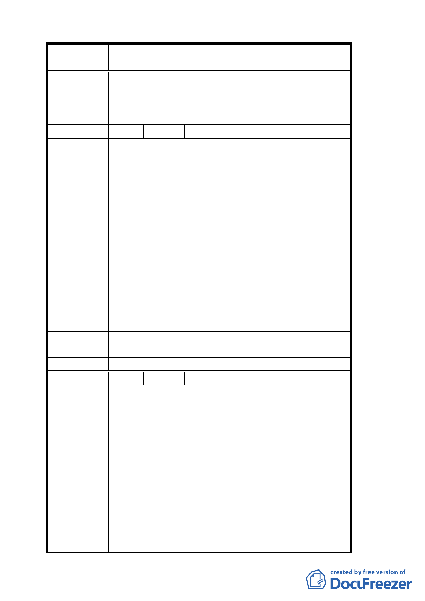

案 名 變更臺北市文山區指南里、老泉里部分保護區為休閒
產業特定專用區都市計畫案
正為三年內完成申請建築核准，核准二年內建築完
成。
委員會決議
專案小組審查結論中「休閒產業特定專用區」乙詞修
正為「本計畫範圍」，其餘同審查結論。
編 號 １２ 陳情人 臺北市景美區農會
本會所有土地上述土地位於草湳段，即第一市民農園
前三百公尺處，依據貴局計畫範圍示意圖，僅涵蓋本
會 221-3 地號之道路邊沿，並未將 221、221-1、221-2、
221-3、221-4 地號土地，坡度在 30％以下之緩坡及平
地部分納入計畫檢討範圍。
陳情理由
本會所屬土地佔 8.2 公頃，於民國九十年開始即著手
規劃臺北市農會三生游園區，該計畫並經台北市政府
評估核屬可行，將來計畫完成後，將有助於提振在地
產業之發展，提高在地就業機會，並為台北市建立塑
造岀完整觀光休閒農業之新形象，故請貴會評估將本
會所有之土地部分保護區列為休閒產業特定專用區計
畫範圍內，以符合該地區之整體規劃利用。
建 請 將 本 會 所 有 土 地 文 山 區 草 湳 段 一 小 段 221 、
建 議 辦 法 221-1、221-2、221-3、221-4 地號土地納入該計畫範
圍內。
專案小組審 建議循「休閒農業輔導管理辦法」申請辦理，將更有
查 結 論 利整體發展規劃使用，而無納入本案範圍之必要。
委 員會決 議 同專案小組審查結論。
編 號 １３ 陳情人 陳崇雄
根據臺北市都市計畫，變更台北市文山區指南段、老
泉里部分保護區為休閒產業特定專用區都市計畫案。
臺北市政府重視茶葉產區發展及開發轄區內休閒資源
之用心，文山區指南里及老泉里之民眾都感受到美意
陳情理由
與受重視關懷。
然而在計畫案中卻也有需要溝通與修繕之處，避免實
際之美意卻成為利益少數民眾的不圓滿計畫。
本人之農地標示位於文山區指南段二小段 79、80、81
地號，雖地處計畫案所劃定之範圍區內，但未符農地
需連接道路之條款，對於本案有下列建議事由。
一、本案在第陸、發展目標及規劃構想中之（三）交
建議辦法
通運輸構想提及 4、利用登山步道整合系統建構完
善人行空間。本人所有權內之農地已具備私設之
一〇